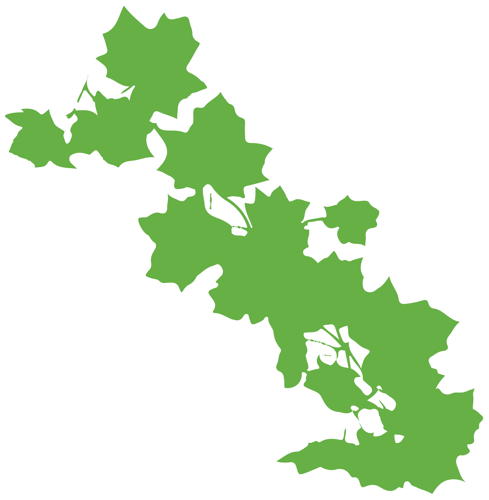
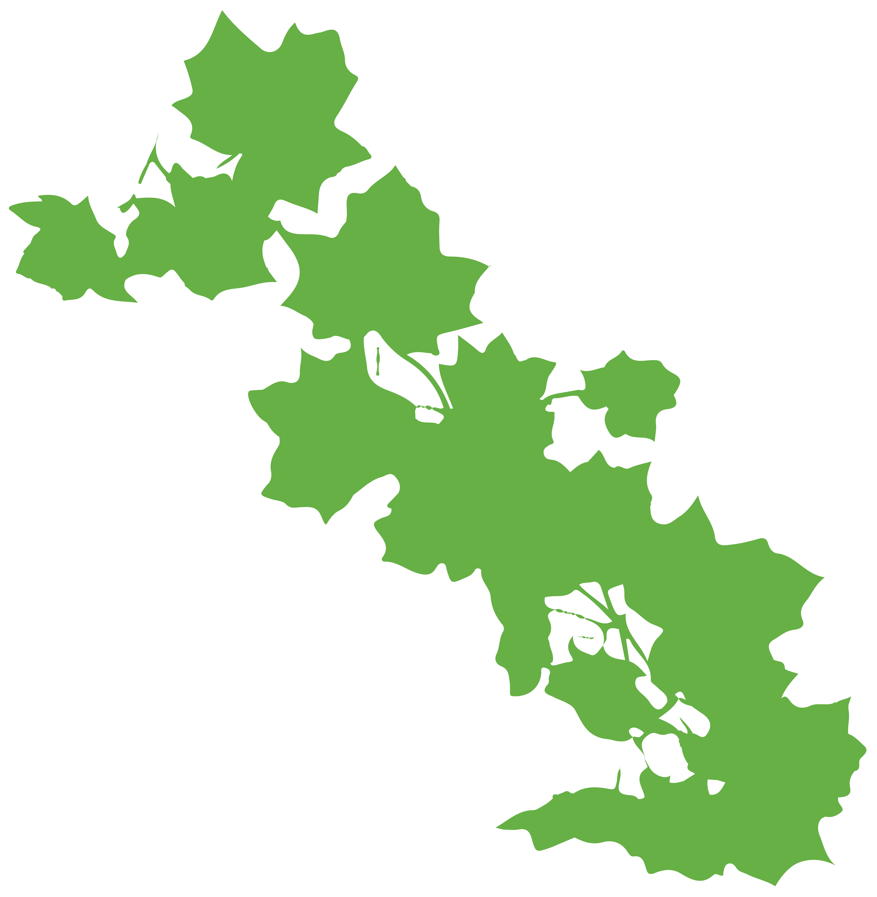

→
→

 



What would happen if humans suddenly vanished from the face of the Earth? While it's a question that may seem rooted in dystopian fiction, it has intrigued scientists, environmentalists, and storytellers alike. Exploring the concept of a world without human interference, we see a vision of Earth gradually returning to its natural state, where cities crumble, wildlife flourishes, and nature reclaims its rightful space.

The documentary series Life After People expands on this idea, exploring how quickly human structures would deteriorate without the upkeep we often take for granted. Each episode explores the fate of our greatest structures, from towering skyscrapers to intricate monuments, revealing just how fragile our civilization is without constant maintenance. For instance, in the very first episode, the series shows how plants and trees would begin creeping over city streets, their roots breaking through concrete within a matter of years. Without humans to trim and control nature’s growth, entire cities would be overtaken by greenery. Skyscrapers that once stood tall would begin to buckle as unchecked corrosion and overgrown ivy weakened their foundations.
As time progresses, the series highlights the dramatic impact that plant overgrowth and weathering would have on even the most iconic landmarks. Within a century, the Golden Gate Bridge would collapse as salt from the ocean corroded its cables, a process accelerated by the absence of human maintenance. In another episode, the Eiffel Tower is shown gradually succumbing to rust and decay. Without engineers to paint and reinforce its iron structure, the tower would eventually fall. The series underscores that while these landmarks currently symbolize human ingenuity, they are no match for nature’s slow, inevitable takeover once humans are no longer around to protect them.
By the time 500 years have passed, Life After People suggests that almost no trace of human existence would remain. Forests would have completely overtaken cities, wetlands would reclaim roads, and wildlife would roam freely where bustling human activity once was. Buildings, bridges, and monuments that define modern civilization would be buried under layers of vegetation, with only remnants of their skeletons visible to the natural world. The documentary series illustrates that despite human dominance over the earth, nature ultimately has the final say. The land would heal itself, and the earth would continue, no longer shaped by human hands.
This vision of life after humans serves as a reflection of our current relationship with the environment. While many of us view the concept of a post-apocalyptic world as bleak, it also offers a message of hope. Even without us, nature will heal, grow, and thrive. In the absence of human activity, the planet will regenerate, and life will continue to evolve, adapting to a new, humanless landscape.
The idea of nature reclaiming the world after our departure may be unsettling to some, but it serves as a powerful reminder of our planet’s resilience and ability to recover from the environmental damage we inflict. Life, in all its forms, is tenacious—and as we look forward, perhaps this possibility can inspire us to reevaluate how we interact with the world around us while we’re still here.
Furthermore, in his book The World Without Us, Alan Weisman paints a vivid picture of what would happen if humanity were to disappear overnight. Without humans to maintain infrastructure, Weisman describes how the built environment would begin to deteriorate within days. "Nature would start to erase the traces of human existence quickly," Weisman writes. "Subway systems would flood within 36 hours, and the roots of trees would begin to crack through concrete and asphalt within weeks." In the span of centuries, cities like New York would resemble ancient ruins, overgrown with forests and teeming with wildlife.
"In the absence of people, many animals that once fled from human activity will find new habitats. As our cities become overgrown, wildlife such as deer, bears, and even larger predators will make their homes in what were once our urban centers...
If humans vanished today, within a few decades the signs of our existence would be faint. Buildings would crumble, streets would crack and be overtaken by plants, and forests would reclaim urban areas. The world would revert to a state of natural balance, free from the marks of our civilization.”

The Last of Us, a video game narrative and television series, also offers a nuanced look at how ecosystems might evolve in a post-human world. The overgrown urban landscapes of abandoned cities serve as a reminder that life, in many forms, continues. As one analysis of the game notes, “Nature, here, becomes both the enemy and the protagonist... the world is a tapestry of greenery and decay, reminding us that, for the planet, our absence is a beginning, not an end.” The story, while centered on human survival, continually highlights nature’s quiet resurgence in the aftermath of human destruction.
The game also ties into themes of degrowth, suggesting that the unchecked expansion of human civilization may ultimately give way to nature's quiet reclaiming of space. According to the University of Michigan's analysis of The Last of Us, the world depicted "portrays the consequences of humanity’s environmental disregard, but also offers a glimpse of what sustainability might look like in a post-human era." The contrast of decaying skyscrapers enveloped by lush vegetation suggests that life goes on—even if we are no longer part of it.